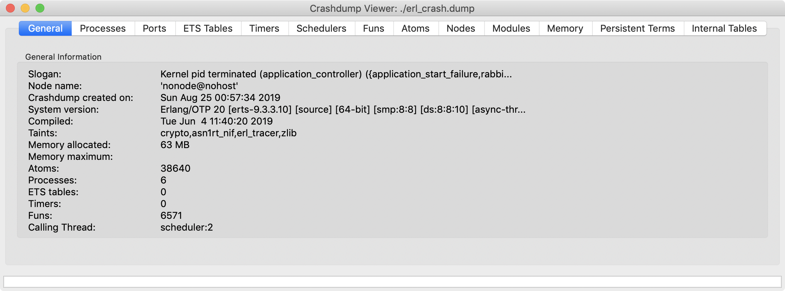

Troubleshooting Guidance
Overview
This guide provides an overview of several topics related to troubleshooting of RabbitMQ installations and messaging-based systems:
- Monitoring and health checks
- Logging
- Node configuration
- Client connectivity
- Client authentication and authorisation
- CLI tool connectivity and authentication
- Runtime crash dumps
- Cluster formation
- Node memory usage
- Connections and connection leaks
- Channels and channel leaks
- TLS
- LDAP
- Traffic captures
node memory usage, metrics and monitoring, TLS, and more.
Monitoring, Metrics, Health Checks
A very important aspect of troubleshooting a production system is monitoring and health checks. They collect data that can be inspected and analysed, helping identify and detect anomalies.
Logging
Logs is another important source of information for troubleshooting. Separate guide on logging explains where to find log files, how to adjust log levels, what log categories exist, connection lifecycle events that can be detected using log files, and more.
Node Configuration
Configuration guide contains a section on locating config file.
Effective node configuration can be inspected using rabbitmqctl environment as well as a number of rabbitmq-diagnostics commands.
CLI Tools Connectivity and Authentication
CLI Tools guide explains how CLI tools authenticate to nodes, what the Erlang cookie file is, and most common reasons why CLI tools fail to perform operations on server nodes.
Cluster Formation
Cluster Formation guide contains a troubleshooting section.
Memory Usage Analysis
Reasoning About Memory Use is a dedicated guide on the topic.
Networking and Connectivity
Troubleshooting Networking is a dedicated guide on the topic of networking and connectivity.
Authentication and Authorisation
Access Control guide contains sections on troubleshooting client authentication and troubleshooting authorisation.
Runtime Crash Dump Files
When the Erlang runtime system exits abnormally, a file named erl_crash.dump is written to the directory where RabbitMQ was started from. This file contains the state of the runtime at the time of the abnormal exit. The termination reason will be available within the first few lines, starting with Slogan, e.g.:
head -n 3 ./erl_crash.dump
# => =erl_crash_dump:0.5
# => Sun Aug 25 00:57:34 2019
# => Slogan: Kernel pid terminated (application_controller) ({application_start_failure,rabbit,{{timeout_waiting_for_tables,[rabbit_user,rabbit_user_permission,rabbit_topic_permission,rabbit_vhost,rabbit_durable_r
In this specific example, the slogan (uncaught exception message) says that a started node timed out syncing schema metadata from its peers, likely because they did not come online in the configured window of time.
To better understand the state of the Erlang runtime from a crash dump file, it helps to visualise it. The Crash Dump Viewer tool, cdv, is part of the Erlang installation. The cdv binary path is dependent on the Erlang version and the location where it was installed.
This is an example of how to invoke it:
/usr/local/lib/erlang/lib/observer-2.9.1/priv/bin/cdv ./erl_crash.dump
A successful result of the above command will open a new application window similar to this:

For the above to work, the system must have a graphical user interface, and Erlang must have been complied with both observer & Wx support.
Connections
Connections guide explains how to identify application connection leaks and other relevant topics.
Channels (AMQP 0-9-1)
Channels guide explains what channel-level exceptions mean, how to identify application channel leaks and other relevant topics.
TLS
Troubleshooting TLS is a dedicated guide on the topic of TLS.
LDAP
LDAP guide explains how to enable LDAP decision and query logging.
Capturing Traffic
A traffic capture can provide a lot of information useful when troubleshooting network connectivity, application behaviour, connection leaks, channel leaks and more. tcpdump and Wireshark and industry standard open source tools for capturing and analyzing network traffic.
Getting Help and Providing Feedback
If you have questions about the contents of this guide or any other topic related to RabbitMQ, don't hesitate to ask them using GitHub Discussions or our community Discord server.
Help Us Improve the Docs <3
If you'd like to contribute an improvement to the site, its source is available on GitHub. Simply fork the repository and submit a pull request. Thank you!
Copyright © 2007-2023 VMware, Inc. or its affiliates. All rights reserved.
Terms of Use •
Privacy •
Trademark Guidelines •
Your California Privacy Rights •
Cookie Settings